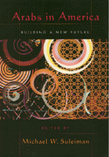

<body bgcolor="#FFFFFF" text="#000000" link="#0000FF" vlink="#CC0000" alink="#CC0000"><center><hr width="350" size="1" align="center" noshade>Setting the record straight about Arab American culture<hr width="350" size="1" align="center" noshade><p><a href="https://cdcshoppingcart.uchicago.edu/Cart/ChicagoBook.aspx?ISBN=9781566397261&&PRESS=temple" target="_top">Buy this book!</a> | <a href="https://cdcshoppingcart.uchicago.edu/Cart/Cart.aspx?PRESS=temple" target="_top">View Cart</a> | <a href="https://cdcshoppingcart.uchicago.edu/Cart/Cart.aspx?PRESS=temple" target="_top">Check Out</a></p><p></p></center><!--none//--><h1>Arabs in America</h1>
<H2>Building a New Future</H2>
<h3>edited by Michael W. Suleiman</h3>
<P>cloth 1-56639-726-X $71.50, Dec 99, <FONT COLOR=#990033>Out of Stock Unavailable</FONT>
<br>paper 1-56639-727-8 $38.95, Nov 99, <FONT COLOR=#990033>Available</FONT>
<br>Electronic Book 1-43990-653-X $38.95 <FONT COLOR=#990033>Out of Stock Unavailable</FONT>
<BR> 368 pp
7x10
13&nbsp;tables 1&nbsp;figure
</P><BLOCKQUOTE><I>"The publication of this dense, rich, and detailed 355-page book, which contains a fine collection of studies, is therefore a welcome and valuable addition to the existing literature. ...this book fills an important gap and should be on the reading list of any course on ethnic relations."</I>
<br>&#151<b><I>Journal of International Migration and Integration</I></b><I></I></BLOCKQUOTE>
<P>For many North Americans, Arab-Americans are invisible, recalled only when words like "terrorism" or "anti-American sentiments" arise. However, people of Arab descent have been contributing to U.S. and Canadian culture since the 1870's in fields as diverse as literature, science, politics, medicine, and commerce&#151witness surgeon Michael DeBakey, former Oregon governor Victor Atiyeh, consumer advocate Ralph Nader, and Canadian M.P. Mac Harb. Yet, while Arab-American contributions to our society are significant and Arab-Americans surpass the U.S. average in both education and economics, they still struggle for recognition and acceptance.
<p>In this volume, editor Michael Suleiman brings together 21 prominent scholars from a wide range of perspectives&#151including anthropology, economics, history, law, literature and culture, political science, and sociology&#151to take a close look at the status of Arabs in North America. Topics range from the career of Arab-American singer, dancer, and storyteller Wadeeha Atiyeh to a historical examination of Arab-Americans and Zionism. The contributors discuss an assortment of different communities&#151a Palestinian refugee community in Detroit, a group of well-educated Jordanian men, and the Shi'a Muslims&#151in order to illustrate the range of Arab �migr� experience. More broadly, they examine Arabs in the legal system, youth and family, health and welfare, as well as Arab-American identity, political activism, and attempts by Arab immigrants to achieve respect and recognition in their new homes. They address both the present situation for Arab-Americans and prospects for their future.
<p><i>Arabs in America</i> will engage anyone interested in Arab-American studies, ethnic studies, and American studies.
<BR>&nbsp;<h2>Excerpt</h2><P>Excerpt available at <a href="http://www.temple.edu/tempress">www.temple.edu/tempress</a></p>
<BR>&nbsp;<h2>Reviews</h2>
<p><I>"...important, challenging collection of essays. ...There is much new and compelling material in this anthology. ...No one has a better grasp of the occasionally odd, even bizarre experience of Americans of Arab extraction than Michael Suleiman."</I>
<br>&#151<b><I>Journal of Palestinian Studies</I></b>
<p><I>"...this work is generally a valuable addition to the growing literature on Arabs in the United States...and Canada."</I>
<br>&#151<b><I>Journal of American Ethnic History</I></b>
<p><i>"This new collection moves scholarship on Arab Americans well beyond traditional accounts of immigrant adaptation to American society. Arab Americans, as many contributors lament, have been marginal to narratives of multiculturalism in America. But this current research points to the relevance of Arab Americans to our understandings of immigrant-host society relationships, racial hierarchies, and ideologies of citizenship."</i>
<br>&#151<b><i>Journal of Ethnic and Migration Studies</i></b>
<p><i>"...has a number of fine articles..."</i>
<br>&#151<b><i>Middle East Quarterly</i></b>
<BR>&nbsp;<h2>Contents</h2><P>
<p>Preface
<br>Introduction: The Arab American Immigrant Experience &#150 Michael W. Suleiman
<p><b>Part I: Profiles of Specific Communities</b>
<br>1. Attachment and Identity: The Palestinian Community of Detroit &#150 May Seikaly
<br>2. Jordanian Migrants in Texas and Ohio: The Quest for Education and Work in A Global Society &#150 Richard T. Antoun
<br>3. A Look at Differing Ideologies among Shi'a Muslims in the United States &#150 Linda S. Walbridge
<p><b>Part II: Arabs and the American Legal System</b>
<br>4. Arabs and the American Legal System: Cultural and Political Ramifications &#150 Fatima Agha Al-Hayani
<br>5. A Closer Look at Anti-Terrorism Law: <I>American-Arab Anti-Discrimination Committee v. Reno</I> and the Construction of Aliens' Rights &#150 Kathleen M. Moore
<br>6. Legal Perspectives on Arabs and Muslims in U.S. Courts &#150 Mohamed Mattar
<p><b>Part III: Youth and the Family</b>
<br>7. Teens-Between: The Public and Private Spheres of Arab-Canadian Adolescents &#150 Sharon McIrvin Abu-Laban and Baha Abu-Laban
<br>8. Family and Ethnic Identity in an Arab-American Community &#150 Kristine Ajrouch
<br>9. Arab-Canadian Youth in Immigrant Family Life &#150 Baha Abu-Laban and Sharon McIrvin Abu-Laban
<p><b>Part IV: Health and Welfare Issues</b>
<br>10. Arab-American Health and the Process of Coming to America: Lessons from the Metropolitan Detroit Area &#150 Rosina Hassoun
<br>11. Attitudes of Arab Immigrants Toward Welfare &#150 Barbara S. Aswad
<br>12. The Deteriorating Ethnic Safety Net Among Arab Immigrants in Chicago &#150 Louise Cainkar
<p><b>Part V: Political Activism</b>
<br>13. Not Quite White: Race Classification and the Arab-American Experience &#150 Helen Hatab Samhan
<br>14. Debating Palestine: Arab-American Challenges to Zionism, 1917-1932 &#150 Lawrence Davidson
<br>15. Community and Political Activism Among Arab Americans in Detroit &#150 Janice J. Terry
<p><b>Part VI: Arab-American Identity Negotiations</b>
<br>16. Against the Grain of the Nation&#151The Arab &#150 Suad Joseph
<br>17. Far-Off and Fascinating Things: Wadeeha Atiyeh and Images of Arabs in the American Popular Theater, 1930 - 1950 &#150 Lori Anne Salem
<br>18. Arabs in Canada: Assimilation or Integration? &#150 Ibrahim Hayani
<br>19. Resisting Invisibility: Arab-Americans in Academia and Activism &#150 Therese Saliba
<br>20. Arab-American Ethnicity: Location, Coalitions, and Cultural Negotiations &#150 Lisa Suhair Majaj
<p>About the Contributors
<br>Index
</P><BR>&nbsp;<H2>About the Author(s)</H2>
<table><tr><td valign="top"><img src="/tempress/authors/1467_au.gif" height="90" width="75"></td><td width="100%" valign="middle"><p><B>Michael W. Suleiman</B> is University Distinguished Professor in the Department of Political Science at Kansas State University. He has written and co-edited numerous works in the field of Arab American studies, including <i>U.S. Policy on Palestine from Wilson to Clinton</i> and <i>Arab Americans: Continuity and Change</i>.</P></td></tr></table>
<P>Contributors: Baha Abu-Laban, Sharon McIrvin Abu-Laban, Khristine Ajrouch, Fatima Agha Al-Hayani, Richard T. Antoun, Barbara C. Aswad, Louise Cainkar, Lawrence Davidson, Rosina Hassoun, Ibrahim Hayani, Suad Joseph, Lisa Suhair Majaj, Mohammed Mattar, Kathleen M. Moore, Lori Anne Salem, Therese Saliba, Helen Hatab Samhan, May Seikaly, Janice J. Terry, Linda S. Walbridge, and the editor.</P>
<BR><H2>Subject Categories</H2>
<p><A HREF="/tempress/race.html" TARGET="_top">Race and Ethnicity</a>
<BR><A HREF="/tempress/general.html" TARGET="_top">General Interest</a>
</p>
<p align="center"><a href="https://cdcshoppingcart.uchicago.edu/Cart/ChicagoBook.aspx?ISBN=9781566397261&&PRESS=temple" target="_top">Buy this book!</a> | <a href="https://cdcshoppingcart.uchicago.edu/Cart/Cart.aspx?PRESS=temple" target="_top">View Cart</a> | <a href="https://cdcshoppingcart.uchicago.edu/Cart/Cart.aspx?PRESS=temple" target="_top">Check Out</a></p><p><font face="Arial" size="1"><a href="copyright.html" onMouseOver="window.status='Web Copyright Policy';return true;" onMouseOut="window.status=''" title="Web Copyright Policy">&copy;</a> 2015 <a href="http://www.temple.edu" target="new" onMouseOver="window.status='Link to Temple University home page';return true;" onMouseOut="window.status=''" title="Link to Temple University home page">Temple University</a>. All Rights Reserved. http://www.temple.edu/tempress/titles/1467_reg.html</font></p>